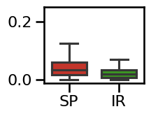
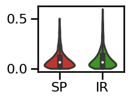
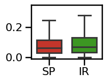
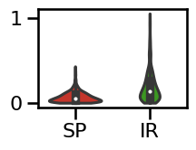
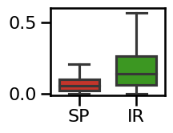

Exponent Comparisons
Contents
Exponent Comparisons¶
This notebook compares methods that directly estimate aperiodic exponents, including:
spectral parameterization
IRASA
# Setup notebook state
from nbutils import setup_notebook; setup_notebook()
import numpy as np
from scipy.stats import ttest_rel
from neurodsp.sim import (sim_powerlaw, sim_knee, sim_combined,
sim_synaptic_current, sim_combined_peak)
from neurodsp.utils import set_random_seed
from bootstrap import bootstrap_corr
# Import custom project code
from apm.io import APMDB
from apm.run import run_comparisons
from apm.methods import irasa, specparam
from apm.methods.settings import (SPECPARAM_PARAMS, SPECPARAM_PARAMS_KNEE,
IRASA_PARAMS, IRASA_PARAMS_KNEE)
from apm.analysis.results import cohens_d
from apm.analysis.error import calculate_errors
from apm.plts import plot_dots
from apm.plts.errors import plot_boxplot_errors, plot_violin_errors
from apm.plts.utils import figsaver
from apm.plts.settings import METHOD_COLORS
from apm.sim.defs import SIM_SAMPLERS
from apm.sim.settings import FS2 as FS
from apm.utils import format_corr
Settings¶
# Update sampling frequency for simulation definition
SIM_SAMPLERS.update_base(fs=FS)
# Set data specific settings
SPECPARAM_PARAMS['fs'] = FS
SPECPARAM_PARAMS_KNEE['fs'] = FS
IRASA_PARAMS['fs'] = FS
IRASA_PARAMS_KNEE['fs'] = FS
# Define run settings
RETURN_PARAMS = True
# Plot settings
DOTS_KWARGS = {
's' : 10,
'alpha' : 0.5,
'color' : '#70706e',
'xlabel' : 'Aperiodic Exponent (SP)',
'ylabel' : 'Aperiodic Exponent (IR)',
'figsize' : (6, 5),
}
ERROR_PLT_KWARGS = {
'labels' : ['SP', 'IR'],
'palette' : METHOD_COLORS,
'saturation' : 0.85,
'width' : 0.7,
'figsize' : (2.5, 2),
}
# Settings for saving figures
SAVE_FIG = True
FIGPATH = APMDB().figs_path / '34_exp_comp'
# Create helper function to manage figsaver settings
fsaver = figsaver(SAVE_FIG, FIGPATH)
# Set the random seed
set_random_seed(101)
Collect Methods¶
# Define measures to apply
measures = {
specparam : SPECPARAM_PARAMS,
irasa : IRASA_PARAMS,
}
measures_knee = {
specparam : SPECPARAM_PARAMS_KNEE,
irasa : IRASA_PARAMS_KNEE,
}
Simulations - Samples Across Aperiodic Signals¶
# Run simulations, comparing SpecParam & IRASA, sampling across aperiodic exponents
results_ap, sim_params_ap = run_comparisons(\
sim_powerlaw, SIM_SAMPLERS['exp_sampler'], measures, return_params=RETURN_PARAMS)
# Get the simulated exponent values
sim_exps_ap = -sim_params_ap.exponent.values
Errors¶
# Calculate errors of each method, as compared to ground truth simulations
errors_ap = calculate_errors(results_ap, sim_exps_ap)
# Check the errors per method, and the difference between them
for method in errors_ap.keys():
print('{:10s}\t{:1.4f}'.format(method, np.median(errors_ap[method])))
print('\ndifference:\t{:1.4f}'.format(\
np.median(errors_ap['specparam']) - np.median(errors_ap['irasa'])))
specparam 0.0503
irasa 0.0195
difference: 0.0308
Statistics¶
# Check the statistical difference between measure errors
ttest_rel(errors_ap['specparam'], errors_ap['irasa'])
TtestResult(statistic=25.42327060910109, pvalue=2.3290784200192167e-110, df=999)
# Compute the effect size of the difference between method errors
cohens_d(errors_ap['specparam'], errors_ap['irasa'])
1.071171251325719
Visualize¶
# Plot the errors - violinplot
plot_violin_errors(errors_ap, **ERROR_PLT_KWARGS)
# Plot the errors - boxplot
plot_boxplot_errors(errors_ap, **ERROR_PLT_KWARGS, **fsaver('spec_irasa_exp_errors'))
# Plot the comparison between specparam and IRASA
plot_dots(results_ap['specparam'], results_ap['irasa'], tposition='tl', **DOTS_KWARGS,
expected=[-0.1, 2.75], xlim=[-0.1, 2.7], ylim=[-0.1, 2.7],
**fsaver('spec_irasa_exp'))
# Check correlations
corrs_ap = bootstrap_corr(results_ap['specparam'], results_ap['irasa'])
print(' SP & IR: ', format_corr(*corrs_ap))
SP & IR: r=+0.997 CI[+0.997, +0.997], p=0.000
Simulations - Samples Across Combined Signals¶
# Run simulations, comparing SpecParam & IRASA, sampling across combined signal parameters
results_comb, sim_params_comb = run_comparisons(\
sim_combined, SIM_SAMPLERS['comb_sampler'], measures, return_params=RETURN_PARAMS)
# Get the simulated exponent values
sim_exps_comb = -sim_params_comb.exponent.values
Errors¶
# Calculate errors of each method, as compared to ground truth simulations
errors_comb = calculate_errors(results_comb, sim_exps_comb)
# Check the errors per method
for method in errors_comb.keys():
print('{:10s}\t{:1.4f}'.format(method, np.median(errors_comb[method])))
print('\ndifference:\t{:1.4f}'.format(\
np.median(errors_comb['specparam']) - np.median(errors_comb['irasa'])))
specparam 0.0357
irasa 0.0194
difference: 0.0163
Statistics¶
# Check the statistical difference between measure errors
ttest_rel(errors_comb['specparam'], errors_comb['irasa'])
TtestResult(statistic=17.101023541019725, pvalue=1.0559309401684798e-57, df=999)
# Compute the effect size of the difference between method errors
cohens_d(errors_comb['specparam'], errors_comb['irasa'])
0.7293764049652732
Visualize¶
# Plot the errors - violinplot
plot_violin_errors(errors_comb, **ERROR_PLT_KWARGS, ylim=[-0.01, 0.25])
# Plot the errors - boxplot
plot_boxplot_errors(errors_comb, ylim=[-0.01, 0.25],
**ERROR_PLT_KWARGS, **fsaver('spec_irasa_comb_errors'))

# Plot the comparison between specparam and IRASA
plot_dots(results_comb['specparam'], results_comb['irasa'], tposition='tl', **DOTS_KWARGS,
expected=[-0.1, 2.75], xlim=[-0.1, 2.7], ylim=[-0.1, 2.7], **fsaver('spec_irasa_comb'))
# Check correlations
corrs_comb = bootstrap_corr(results_comb['specparam'], results_comb['irasa'])
print(' SP & IR: ', format_corr(*corrs_comb))
SP & IR: r=+0.998 CI[+0.998, +0.998], p=0.000
Simulations - Across Timescales (Synaptic Sims)¶
# Run simulations, comparing SpecParam & IRASA, sampling across timescale values
results_tscale, sim_params_tscale = run_comparisons(\
sim_synaptic_current, SIM_SAMPLERS['tscale_sampler'],
measures_knee, return_params=RETURN_PARAMS)
# Define the expected aperiodic exponent for the synapse knee model
sim_exps_tscale = np.ones(SIM_SAMPLERS.n_samples) * 2
Errors¶
# Calculate errors of each method, as compared to ground truth simulations
errors_tscale = calculate_errors(results_tscale, sim_exps_tscale)
# Check the errors per method
for method in errors_tscale.keys():
print('{:10s}\t{:1.4f}'.format(method, np.median(errors_tscale[method])))
print('\ndifference:\t{:1.4f}'.format(\
np.median(errors_tscale['specparam']) - np.median(errors_tscale['irasa'])))
specparam 0.0629
irasa 0.0669
difference: -0.0040
Statistics¶
# Check the statistical difference between measure errors
ttest_rel(errors_tscale['specparam'], errors_tscale['irasa'])
TtestResult(statistic=-3.7429900350805534, pvalue=0.0001922154900069521, df=999)
# Compute the effect size of the difference between method errors
cohens_d(errors_tscale['specparam'], errors_tscale['irasa'])
-0.12402656493705909
Visualize¶
# Plot the errors - violinplot
plot_violin_errors(errors_tscale, **ERROR_PLT_KWARGS)

# Plot the errors - boxplot
plot_boxplot_errors(errors_tscale, ylim=[-0.01, 0.35],
**ERROR_PLT_KWARGS, **fsaver('spec_irasa_tscale_errors'))

# Plot the comparison between specparam and IRASA
plot_dots(results_tscale['specparam'], results_tscale['irasa'], tposition='tl',
expected=[1.45, 2.25], xlim=[1.45, 2.25], ylim=[1.45, 2.25],
**DOTS_KWARGS, **fsaver('spec_irasa_tscale'))
# Check correlations
corrs_knee = bootstrap_corr(results_tscale['specparam'], results_tscale['irasa'])
print(' SP & IR: ', format_corr(*corrs_knee))
SP & IR: r=+0.343 CI[+0.281, +0.404], p=0.000
Simulations - Across Knees¶
# Run simulations, comparing SpecParam & IRASA, sampling across knee values
results_knee, sim_params_knee = run_comparisons(\
sim_knee, SIM_SAMPLERS['knee_sampler'], measures_knee, return_params=RETURN_PARAMS)
# Get the simulated exponent values
sim_exps_knee = -1 * sim_params_knee.exponent2.values
Errors¶
# Calculate errors of each method, as compared to ground truth simulations
errors_knee = calculate_errors(results_knee, sim_exps_knee)
# Check the errors per method
for method in errors_knee.keys():
print('{:10s}\t{:1.4f}'.format(method, np.nanmedian(errors_knee[method])))
print('\ndifference:\t{:1.4f}'.format(\
np.nanmedian(errors_knee['specparam']) - np.nanmedian(errors_knee['irasa'])))
specparam 0.0753
irasa 0.1110
difference: -0.0357
Statistics¶
# Check the statistical difference between measure errors
ttest_rel(errors_knee['specparam'], errors_knee['irasa'], nan_policy='omit')
TtestResult(statistic=2.137320194161163, pvalue=0.032815205492808926, df=995)
# Compute the effect size of the difference between method errors
cohens_d(errors_knee['specparam'], errors_knee['irasa'])
0.08243276198951752
Visualize¶
# Plot the errors - violinplot
plot_violin_errors(errors_knee, **ERROR_PLT_KWARGS, ylim=[0, 1])
# Plot the errors - boxplot
plot_boxplot_errors(errors_knee, ylim=[-0.01, 0.5],
**ERROR_PLT_KWARGS, **fsaver('spec_irasa_knee_errors'))
# Plot the comparison between specparam and IRASA
plot_dots(results_knee['specparam'], results_knee['irasa'], tposition='tl',
expected=[0.0, 3.], xlim=[-0.1, 3], ylim=[-0.1, 3],
**DOTS_KWARGS, **fsaver('spec_irasa_knee'))
# Check correlations
corrs_knee = bootstrap_corr(results_tscale['specparam'], results_tscale['irasa'])
print(' SP & IR: ', format_corr(*corrs_knee))
SP & IR: r=+0.343 CI[+0.280, +0.402], p=0.000
Simulations - Samples Across Peak Signals¶
# Run simulations, comparing SpecParam & IRASA, sampling across peak signals
results_bw, sim_params_bw = run_comparisons(\
sim_combined_peak, SIM_SAMPLERS['peak_sampler'], measures, return_params=RETURN_PARAMS)
# Get the simulated exponent values
sim_exps_bw = -sim_params_bw.exponent.values
# Calculate errors of each method, as compared to ground truth simulations
errors_bw = calculate_errors(results_bw, sim_exps_bw)
Errors¶
# Check the errors per method
for method in errors_bw.keys():
print('{:10s}\t{:1.4f}'.format(method, np.median(errors_bw[method])))
print('\ndifference:\t{:1.4f}'.format(\
np.median(errors_bw['specparam']) - np.median(errors_bw['irasa'])))
specparam 0.0553
irasa 0.1377
difference: -0.0824
Statistics¶
# Check the statistical difference between measure errors
ttest_rel(errors_bw['specparam'], errors_bw['irasa'])
TtestResult(statistic=-24.826045176664056, pvalue=2.3264616334450653e-106, df=999)
# Compute the effect size of the difference between method errors
cohens_d(errors_bw['specparam'], errors_bw['irasa'])
-0.9161249711756813
Visualize¶
# Plot the errors - violinplot
plot_violin_errors(errors_bw, **ERROR_PLT_KWARGS)

# Plot the errors - boxplot
plot_boxplot_errors(errors_bw, ylim=[-0.01, 0.60],
**ERROR_PLT_KWARGS, **fsaver('spec_irasa_bw_errors'))

# Plot the comparison between specparam and IRASA
plot_dots(results_bw['specparam'], results_bw['irasa'], tposition='tl',
expected=[-0.25, 3.1], xlim=[-0.25, 3.1], ylim=[-0.25, 3.1],
**DOTS_KWARGS, **fsaver('spec_irasa_bw'))
# Check correlation
corrs_bw = bootstrap_corr(results_bw['specparam'], results_bw['irasa'])
print(' SP & IR: ', format_corr(*corrs_bw))
SP & IR: r=+0.966 CI[+0.961, +0.969], p=0.000
Conclusions¶
Comparing between these methods, overall we can see that:
In simple cases (powerlaw + oscillations), specparam and IRASA perform very similarly